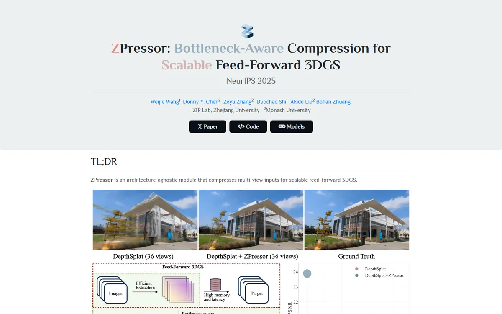

ZPressor: Bottleneck-Aware Compression for Scalable Feed-Forward 3DGS
A museum placard in soft humanist capitals, three words of its title washed in rose, steel blue and dusty pink.

Checked against the rendered page. Body font is declared as Optima first; on machines without Optima all text renders in Philosopher (as in the capture).
Why it is here
Muted pastel colours tint the words in the title, and an icon logo sits above it, giving the page a recognisable look on a familiar academic template. The left-aligned ruled section heads read well, the TL;DR teaser has an inline bubble chart, and the before/after slider includes scene tabs.
Overview
Color Palette
Typography
Philosopher
ZPressor: Bottleneck-Aware Compression for Scalable Feed-Forward 3DGS
Abstract · Method · Results · BibTeX — 0123456789
Optima
ZPressor: Bottleneck-Aware Compression for Scalable Feed-Forward 3DGS
Abstract · Method · Results · BibTeX — 0123456789
Spacing & Shape
Page Modules
Guidelines
More like this

CRAFT: Training-Free Cascaded Retrieval for Tabular QA
A tidy product manual in pale blueprint blue, where every stage wears its own colored edge.

Efficient Self-Evaluation for Diffusion Language Models via Sequence Regeneration
A tidy stack of rounded cards washed in a blue-violet-apricot dawn, signed with a gradient wordmark.

FIGMA: Towards FIne-Grained Music retrievAl
A music journal on warm paper: a heavy Newsreader headline under a red kicker, big red serif numerals for the results, and figures resting in soft cream frames.

GuideDog: A Real-World Egocentric Multimodal Dataset for Blind and Low-Vision Accessibility-Aware Guidance
A quiet monograph page: one serif column, oxblood ink for the links, and a table that blushes only at its own row.

LaMI: Augmenting Large Language Models via Late Multi-Image Fusion
A careful conference handout: Noto Serif headings, navy outlined buttons and soft grey bands taking turns.

PairCoder++: Pair Programming as a Universal Paradigm for Verified Code-Driven Multimodal and Structured-Artifact Generation
A crisp white product page: a blue announcement strip, ink-black pill buttons and every figure on a soft-shadowed card.